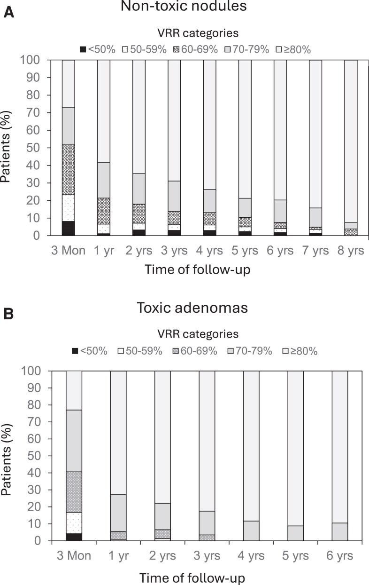
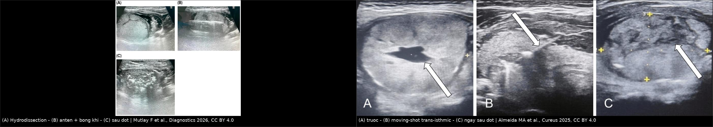
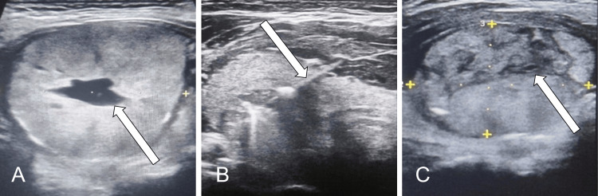

1629 — Đốt nhiệt nhân giáp lành tính ĐẶC: RFA & MWA / Thermal ablation of solid benign thyroid nodules
Tags: pattern:not vung:tuyen-giap protocol:dot-nhiet-giap score:IAR incidentaloma:nhan-giap
Mức chắc chắn (certainty): tổng hợp y văn (literature synthesis) — biên từ toàn văn các bài mở: đồng thuận Hội Tuyến giáp Mỹ Latinh (Dueñas JP et al., Arch Endocrinol Metab 2025, PMC12662451, CC BY), đoàn hệ 883 nhân theo dõi tới 8 năm sau một lần RFA (Dobnig H & Amrein K, J Clin Endocrinol Metab 2026, PMC13099205, CC BY), nghiên cứu tỷ lệ đốt ban đầu (IAR) (Bernardi S et al., Front Endocrinol 2020, PMC7883676, CC BY), quy trình MWA thực hành (Chaidas K et al., J Clin Med 2026, PMC13607213, CC BY), loạt MWA ở người cao tuổi (Mutlay F et al., Diagnostics 2026, PMC13565520, CC BY) và loạt RFA (Almeida MA et al., Cureus 2025, PMC12702792, CC BY). Số liệu lấy từ toàn văn.
1. Tổng quan — vì sao "đốt nóng" chứ không "bơm cồn", và vì sao kết quả phải chờ 12 tháng
- Bệnh học: phần lớn nhân giáp lành tính là nhân keo tăng sinh (colloid nodule) hoặc u tuyến nang (follicular adenoma), cấu trúc đặc, giàu tế bào và mạch — khác hoàn toàn nang giáp (bài 1622). Vì không có khoang dịch, cồn không có môi trường để lan tỏa khắp nhân → PEI thất bại ở nhân đặc; cần năng lượng nhiệt.
- TẠI SAO nhiệt diệt được nhân: dòng điện tần số cao (RFA) hoặc vi sóng (MWA) làm đông vón protein và hoại tử đông (coagulative necrosis) mô đích trong vài phút. Trên siêu âm, vùng đốt chuyển tăng âm do bọt khí — đây là dấu hiệu "đã đốt tới" dùng để dẫn đường (kỹ thuật moving-shot: rút kim dần từ đáy lên bờ và quét từng lớp).
- TẠI SAO VRR 3 tháng chỉ ~56–69% mà 12 tháng ~80–86%: mô hoại tử không biến mất ngay — nó còn nằm tại chỗ và được đại thực bào dọn dần trong 6–24 tháng. Vì vậy đánh giá "thành công" ở 12 tháng, không phải ở 1 tháng.
- TẠI SAO khối đặc lại khó hơn nang: (1) không có "chất dẫn" để nhiệt lan đều; (2) hiệu ứng tản nhiệt (heat sink) của mạch máu lớn trong nhân; (3) giới hạn an toàn 2–3 mm với dây thần kinh quặt ngược (RLN), khí quản, thực quản, bao giáp → phải hy sinh một lớp mô sát bờ. Ba lý do này chính là nguồn gốc của chỉ số IAR và của hydrodissection.
- Ngưỡng định lượng nằm lòng:
- Giảm thể tích (VRP) nhân lành tính — gộp 6 nghiên cứu (956 nhân RFA/938 nhân MWA): 3 tháng −56% (RFA) vs −54% (MWA); 6 tháng −81% vs −75%; 12 tháng −86% vs −80%; triệu chứng và thẩm mỹ cải thiện như nhau (PMC12662451, dẫn Guo và cs.).
- Một lần RFA, theo dõi tới 8 năm (883 nhân không độc, trung vị 10,1 mL): VRR 69,1 ± 15,0% ở 3 tháng → 79,7% ở 1 năm → 82,8% ở 3 năm → 86,2% ở 5 năm; tái phát tích lũy 4,4% ở 2 năm và 17,3% ở 5–8 năm; RFA lần 2 chỉ 1,2% (PMC13099205).
- Nhân độc (toxic adenoma, 144 nhân): VRR 70,1% ở 3 tháng → 88,8% ở 4 năm; TSH giảm trở lại (≤ 0,4 mIU/L) tích lũy 21,6% ở 5 năm (PMC13099205) — nghĩa là đốt không "chữa khỏi" cường giáp vĩnh viễn, phải theo dõi hormon.
- IAR (tỷ lệ thể tích đã đốt / thể tích nhân, đo trên siêu âm ngay sau đốt): trung vị 83%; cut-off 49% dự báo hiệu quả kỹ thuật (VRR ≥ 50% sau 1 năm) với AUC 0,87, Se 0,71, Sp 0,92; cut-off 73% dự báo không phải đốt lại với AUC 0,84 (PMC7883676).
- Năng lượng: đạt > 2,1 kJ/mL mô nhân dự báo khỏi bệnh ở nhân độc (91% vs 44%) (PMC12662451, dẫn Mauri và cs.).
- Biến chứng: gộp 2.245 bệnh nhân/2.540 nhân lành tính — biến chứng chung 2,38%, nặng 1,35%, nhẹ 1,03%; thay đổi giọng 0,5–4,7%, tụ máu 0,9–17% (tùy định nghĩa, gộp nhiều loạt), suy giáp vĩnh viễn và vỡ nhân rất hiếm; nguy cơ biến chứng vĩnh viễn < 1% (PMC12662451).

Tỷ lệ bệnh nhân theo nhóm giảm thể tích (VRR) sau một lần RFA: nhóm VRR ≥ 80% tăng dần và chiếm gần như toàn bộ sau 8 năm; nhóm VRR < 50% teo dần. Đây là lý do phải chờ 12 tháng mới kết luận "hiệu quả kỹ thuật". Nguồn: Dobnig H & Amrein K, J Clin Endocrinol Metab 2026, Fig. 2, CC BY 4.0 (nguyên bản).2. Mẫu hình + chẩn đoán phân biệt theo loại nhân (gamut)
- Mẫu hình đích: nhân đặc hoặc đặc-ưu thế, giảm âm/đồng âm, bờ đều, không vi vôi hóa, không bờ tua gai, không hướng không song song, EU-TIRADS 2–3 / ACR TI-RADS TR1–TR2, FNA Bethesda II, có triệu chứng chèn ép hoặc vấn đề thẩm mỹ, hoặc > 2 cm và đang lớn lên.
- Định nghĩa "đang lớn" (dùng để đặt chỉ định): tăng ≥ 20% ở ít nhất 2 đường kính với mức tăng tối thiểu 2 mm, hoặc thể tích tăng > 50%, hoặc xuất hiện triệu chứng chèn ép (PMC12662451).
- Gamut theo thành phần — quyết định kỹ thuật:
- Nhân đặc (> 90% đặc): đích của RFA/MWA; VRR 12 tháng ~80–86%.
- Nhân đặc-ưu thế (50–90% đặc): hút dịch trước rồi đốt phần đặc (PMC13607213); kết quả tốt nhưng cần đánh giá lại phần đặc còn mạch.
- Nang ưu thế dịch / nang thuần: đốt cồn (PEI) là đầu tay — xem bài 1622; RFA dành cho ca tái phát/còn phần đặc có mạch.
- Nhân độc / AFTN: RFA hiệu quả nhưng TSH giảm lại 21,6% ở 5 năm → phải theo dõi hormon, không hứa "khỏi vĩnh viễn".
- Bướu đa nhân: chỉ đốt 2–5 nhân, cần còn ≥ 50% nhu mô giáp bình thường và đánh giá từng nhân riêng (PMC12662451).
- Nghi ác (Bethesda III–VI, TR4–TR5, vi vôi hóa, xâm lấn bao): không đốt — chuyển phẫu thuật/chẩn đoán mô học (bài 230).
- Nhân sau xương ức / chạm bao / sát khí quản: thận trọng — cần hydrodissection đủ 2–3 mm hoặc chuyển mổ.
- Mnemonic 5 câu hỏi trước khi đốt: (1) Có 2 lần tế bào học lành tính chưa? (2) Nhân đặc hay nang? (3) Thể tích bao nhiêu mL? (4) Có triệu chứng/thẩm mỹ đáng điều trị? (5) Có dây thanh đối bên liệt không?
3. Bảng so sánh phân biệt (ma trận đối chiếu)
3a. Chọn tổn thương — ai được đốt, ai không
| Thực thể (entity) | Hình ảnh điển hình | Chốt vào (rule-in) | Chốt loại (rule-out) | Gợi ý xác nhận |
|---|---|---|---|---|
| Nhân đặc lành tính — đích của RFA/MWA | Giảm âm/đồng âm đều, bờ nhẵn, không vi vôi hóa, có mạch trong nhân | Bethesda II + EU-TIRADS 2–3 + có triệu chứng hoặc > 2 cm đang lớn | Bờ tua gai, vi vôi hóa, hướng không song song, mất mạch đột ngột → nghi ác | FNA ± lần 2; theo dõi VRR 1–3–6–12 tháng |
| Nhân đặc-ưu thế / nang ưu thế dịch | Phần dịch + phần đặc; phần đặc có mạch | Phần đặc không mạch + FNA lành tính → hút dịch rồi đốt | Phần đặc có mạch trong → phải FNA phần đặc trước | Siêu âm Doppler; PEI trước (bài 1622) |
| Nhân độc (toxic adenoma/AFTN) | Nhân đặc, TSH thấp, xạ hình tập trung | TSH < 0,4 mIU/L + xạ hình phù hợp + nhân đơn độc | TSH bình thường → nhân không độc, không cần kiểm soát cường giáp | TSH/FT4; theo dõi TSH sau đốt 5 năm |
| U tuyến thể nang (Bethesda IV) | Nhân đặc đồng nhất, vỏ rõ, không dấu hiệu nhú | Bethesda IV sau 2 lần FNA | Có bất thường nhân/mật độ → không được đốt | Chẩn đoán mô học; đốt chỉ khi có chống chỉ định mổ |
| Nhân giả trong viêm giáp Hashimoto | Vùng giảm âm bờ mờ, không có vỏ, nhu mô xung quanh không đồng nhất | Bối cảnh viêm giáp + không có khối thật trên 2 bình diện | Khối có vỏ, đẩy lệch mô xung quanh → nhân thật | Anti-TPO, siêu âm lặp; không đốt "giả nhân" |
| Tuyến cận giáp / hạch cổ | Giảm âm, nằm ngoài bao giáp hoặc góc dưới giáp | Vị trí ngoài tuyến giáp + PTH/Canxi | Nằm trong tuyến, có mô giáp bao quanh → nhân giáp | PTH, siêu âm; không đốt nhầm tuyến cận giáp |
3b. Đọc hình sau đốt — "còn u sống" hay "mô hoại tử đang dọn"
| Hình ảnh sau đốt | Chốt vào (rule-in) | Chốt loại (rule-out) | Xử trí |
|---|---|---|---|
| Vùng hoại tử mong đợi | Vùng giảm âm/không đồng nhất chiếm toàn bộ nhân, không mạch, teo dần theo tháng | Có nốt tăng sinh mạch ở rìa → nghi còn sống | Theo dõi 1–3–6–12 tháng; không chọc vùng hoại tử |
| Còn mô sống (residual viable) | Nốt ngấm mạch/ bắt contrast ở rìa, IAR thấp (< 49%) | Hoại tử toàn bộ + VRR ≥ 50% ở 12 tháng | Đốt bổ sung khi có triệu chứng; IAR < 73% → nguy cơ đốt lại |
| Tái phát (regrowth) | Thể tích tăng > 50% so với lần nhỏ nhất trước đó | Thể tích ổn định/giảm dần | Đốt lại ± phẫu thuật; kiểm tra tế bào học nếu hình thái đổi |
| Vỡ nhân sau đốt (nodule rupture) | Đau, sưng cổ 2–4 tuần sau đốt, dịch quanh tuyến | Đau ngay trong 24 giờ → đau thủ thuật thường | Đa số điều trị bảo tồn (biến chứng nhẹ); dẫn lưu nếu áp-xe |
| Áp-xe / viêm mô tế bào vùng cổ | Sốt, đỏ, đau tăng, khí trong mô | Chỉ đau + phù nhẹ không sốt | Kháng sinh ± dẫn lưu; biến chứng nặng |

Trái: (A) hydrodissection tạo lớp dịch bảo vệ, (B) anten MWA trong nhân với bọt khí tăng âm, (C) toàn bộ nhân đã tăng âm sau đốt. Phải: (A) nhân trước đốt (có thành phần dịch trung tâm), (B) kỹ thuật moving-shot trans-isthmic, (C) ngay sau đốt — vùng tăng âm/giảm âm hỗn hợp là mô hoại tử, chưa phải "kết quả cuối". Nguồn: Mutlay F et al., Diagnostics 2026 (CC BY 4.0); Almeida MA et al., Cureus 2025 (CC BY 4.0); ảnh ghép letterbox.4. Protocol can thiệp + chỉ số kiểm soát chất lượng
4.1. Chỉ định (theo đồng thuận, PMC12662451)
- Nhân lành tính không hoạt động (non-functioning) có triệu chứng chèn ép hoặc vấn đề thẩm mỹ, bệnh nhân từ chối mổ hoặc có chống chỉ định mổ, hoặc nhân > 2 cm đang lớn.
- Bắt buộc: tế bào học lành tính (Bethesda II); với nhân lớn/nhiều lần FNA không chẩn đoán được → hội chẩn trước khi đốt.
- Chống chỉ định: nghi ác/không loại trừ được ác; nhân sau xương ức không đặt được kim an toàn; liệt dây thanh đối bên; thai kỳ/cho con bú (theo quy trình đơn vị); rối loạn đông máu nặng.
4.2. Kỹ thuật — 8 bước cố định
- Đo thể tích siêu âm: V = πabc/6 (0,524 × a × b × c), ghi 3 đường kính (mm) + thể tích (mL) — đây là mẫu số của mọi VRR về sau.
- Gây tê tại chỗ; giữ bệnh nhân tỉnh để phát hiện thay đổi giọng tức thì; ca lo lắng dùng diazepam liều thấp dưới lưỡi (PMC13607213).
- Hydrodissection bằng dung dịch glucose 5% lạnh giữa bao giáp và RLN/khí quản/thực quản/cơ ức-giáp/bao cảnh, duy trì lớp đệm ≥ 2–3 mm suốt cuộc đốt; lặp lại mỗi khi lớp mỏng đi hoặc bệnh nhân đau (PMC13607213).
- Đường vào trans-isthmic (qua eo giáp) để kim ổn định, nhìn rõ trên siêu âm và tránh cấu trúc quan trọng; đường bên là phương án hai (PMC13607213).
- Đưa kim tới đáy nhân → đốt → rút dần (moving-shot): quét từng lớp, đổi góc sau mỗi mặt cắt; luôn nhìn thấy đầu kim trước khi bật năng lượng.
- Năng lượng: MWA thực hành 30 W cho phần lớn nhân, 20 W gần bao giáp/RLN/khí quản, 40 W cho phần trung tâm nhân lớn; RFA theo công suất của đơn vị — mục tiêu là > 2,1 kJ/mL mô nhân (PMC13607213, PMC12662451).
- Kết thúc khi toàn bộ nhân chuyển tăng âm trên siêu âm; nhân đặc-ưu thế dịch thì hút dịch trước để tăng hiệu quả.
- Sau đốt: chườm lạnh 20 phút, paracetamol khi đau; soi thanh quản trước và sau đốt ở mọi ca (giọng bình thường không loại trừ liệt dây thanh) (PMC13607213).
4.3. Theo dõi và ngưỡng quyết định
| Thời điểm | Việc làm | Ngưỡng / quyết định |
|---|---|---|
| Ngay sau đốt | Siêu âm + soi thanh quản; đo IAR | IAR ≥ 49% = đủ hiệu quả kỹ thuật; ≥ 73% = ít phải đốt lại |
| 1 tháng | Siêu âm (kích thước, mạch), TSH/FT4 | Không đánh giá "thất bại" ở mốc này |
| 3 / 6 tháng | Thể tích + VRR + triệu chứng (VAS), thẩm mỹ | Nhân độc: VRR ≥ 50% ở 6 tháng dự báo khỏi cường giáp |
| 12 tháng | Thể tích + VRR | VRR ≥ 50% = hiệu quả kỹ thuật; < 50% = cân nhắc đốt lại |
| Hằng năm (≥ 5 năm) | Thể tích, TSH | Tái phát = tăng > 50% so với thể tích nhỏ nhất; nhân độc: TSH giảm lại 21,6% ở 5 năm |
flowchart TD
A["Nhan giap co trieu chung hoac dang lon"] --> B{"FNA Bethesda II va EU-TIRADS 2-3?"}
B -->|"Khong"| C["Chan doan mo hoc - chuyen mo"]
B -->|"Co"| D{"Thanh phan nhan?"}
D -->|"Nang uu the dich"| E["Dot con PEI - bai 1622"]
D -->|"Dac hoac dac-uu the"| F["RFA hoac MWA"]
F --> G["Hydrodissection 2-3 mm + trans-isthmic + moving-shot"]
G --> H{"Toan bo nhan tang am?"}
H -->|"Chua"| I["Dot bu sung trong cung cuoc"]
I --> H
H -->|"Roi"| J["Do IAR ngay sau dot"]
J --> K{"IAR >= 73%?"}
K -->|"Co"| L["Theo doi 1-3-6-12 thang"]
K -->|"Khong"| M["Nguy co dot lai - hen 6 thang"]
L --> N{"VRR 12 thang >= 50%?"}
N -->|"Co"| O["Thanh cong - theo doi hang nam"]
N -->|"Khong"| P["Dot lai hoac phau thuat"]
5. Biến thể bình thường và cạm bẫy
- "Siêu âm lành tính thì khỏi cần FNA": u tuyến thể nang (Bethesda IV) và ung thư thể nang không phân biệt được bằng siêu âm; đốt một Bethesda IV = điều trị ung thư mà không biết.
- Coi vùng tăng âm ngay sau đốt là "đã sạch": tăng âm là bọt khí, có thể che phần mô chưa đốt → phải quét lại sau khi khí tan và đo IAR, không kết luận bằng cảm giác.
- Đốt "vừa đủ" để tránh biến chứng: IAR thấp là nguyên nhân số 1 của đốt lại; trong loạt 5 năm, lý do đốt lại là không đạt hiệu quả kỹ thuật 40%, tái phát 40%, triệu chứng dai dẳng 20% (PMC7883676).
- Hydrodissection một lần rồi bỏ: dịch bị hấp thu trong quá trình đốt → lớp đệm mất dần; RLN tổn thương thường do mất lớp đệm ở phút cuối, không phải phút đầu.
- Bỏ soi thanh quản trước đốt: liệt dây thanh đối bên là chống chỉ định tuyệt đối; không phát hiện trước = nguy cơ suy hô hấp sau đốt.
- Đọc "nhân to lên" ở tuần 1–2 là thất bại: phù/hoại tử làm nhân tạm to; đánh giá bằng VRR ở 3–12 tháng.
- Vỡ nhân ở tuần 2–4: đau, sưng, có khi đỏ — đa số bảo tồn, nhưng phải loại áp-xe (sốt, khí trong mô).
- Quên theo dõi hormon ở nhân độc: giảm thể tích không đồng nghĩa hết cường giáp; 21,6% giảm TSH trở lại trong 5 năm.
- Cạm bẫy "nhân giả" trong Hashimoto: vùng giảm âm bờ mờ, không vỏ, đổi theo thời gian — không phải khối để đốt.
6. Tự lượng giá — Blind Quiz
Ca 1 — Nữ 47 tuổi, nhân thùy phải 37 × 35 × 26 mm, EU-TIRADS 3, FNA Bethesda II, nuốt vướng. Nhìn 3 ảnh và mô tả từng bước.

- Gợi ý: bệnh nhân tỉnh, gây tê tại chỗ; nhân có thành phần dịch trung tâm.
- Câu hỏi: (1) Ảnh B đang làm gì và vì sao chọn đường vào đó? (2) Ảnh C nói lên điều gì — đã thành công chưa? (3) Chỉ số nào cần ghi ngay lúc này?
Bấm để hiện đáp án (findings + chẩn đoán)
- Dấu hiệu: (A) nhân hỗn hợp có khoang dịch trung tâm; (B) điện cực vào nhân theo đường trans-isthmic, kỹ thuật moving-shot; (C) nhân chuyển tăng âm/giảm âm hỗn hợp ngay sau đốt.
- Chẩn đoán/thực hành: chưa kết luận thành công — cần đo IAR (thể tích đã đốt/thể tích nhân): ≥ 49% mới đạt hiệu quả kỹ thuật, ≥ 73% để ít phải đốt lại; và hẹn VRR ở 3–12 tháng. Trong loạt này VRR 6 tháng 47,1% (33,2–62,5%) — nhắc rằng nhân hỗn hợp đáp ứng chậm hơn nhân đặc thuần.
- Nguồn ảnh: Almeida MA et al., Cureus 2025, Fig. 1, CC BY 4.0.
Ca 2 — Bác sĩ nội tiết hỏi: "Đốt xong 1 tháng, siêu âm vẫn còn khối 30 mm, có thất bại không?"
- Gợi ý: nhân ban đầu 10,1 mL (trung vị của đoàn hệ 883 nhân); đốt 1 lần.
- Câu hỏi: Trả lời thế nào, dựa vào con số nào? Khi nào mới gọi là thất bại?
Bấm để hiện đáp án
- Dấu hiệu: ở 3 tháng, VRR trung bình chỉ 69,1 ± 15,0%, và một tỷ lệ đáng kể còn ở nhóm VRR < 50%; tới 1 năm mới đạt 79,7%, 5 năm 86,2%.
- Chẩn đoán/thực hành: chưa thất bại — mô hoại tử còn tại chỗ và được dọn dần 6–24 tháng. Chỉ gọi hiệu quả kỹ thuật khi VRR ≥ 50% ở 12 tháng; gọi tái phát khi thể tích tăng > 50% so với mốc nhỏ nhất. Đốt lại chỉ 1,2% trong đoàn hệ này.
- Nguồn ảnh: Dobnig H & Amrein K, J Clin Endocrinol Metab 2026, Fig. 2, CC BY 4.0.
Ca 3 — Nam 62 tuổi, nhân đặc 32 mL, đốt RFA 1 lần, IAR ước tính 41%. Sau 12 tháng nhân còn 24 mL, bệnh nhân vẫn nuốt vướng.
- Gợi ý: IAR thấp; thể tích ban đầu lớn; không có biến chứng.
- Câu hỏi: (1) Vì sao IAR thấp? (2) Tính VRR và kết luận. (3) Bước tiếp theo?
Bấm để hiện đáp án
- Dấu hiệu: VRR = (32 − 24)/32 = 25% → < 50% ở 12 tháng, tức chưa đạt hiệu quả kỹ thuật; IAR 41% < 49% (ngưỡng hiệu quả) và < 73% (ngưỡng ít đốt lại).
- Chẩn đoán/thực hành: nhân > 30 mL thuộc nhóm đáp ứng kém (nhóm < 10 mL đạt 74% ngừng thuốc ở 12 tháng so với **19%** ở nhóm > 30 mL — PMC12662451); IAR thấp vì bỏ sót phần rìa/gần mạch (heat sink). Bước tiếp: đốt lại có kế hoạch (có thể nhiều lần) hoặc phẫu thuật nếu triệu chứng nặng; tư vấn trước rằng nhân lớn cần nhiều lần đốt.
- Nguồn ảnh: Mutlay F et al., Diagnostics 2026, Fig. 1 (CC BY 4.0) + Almeida MA et al., Cureus 2025, Fig. 1 (CC BY 4.0) — ảnh ghép.
Bài liên quan chéo
- 1622 – Đốt cồn nang giáp lành tính (PEI/EA) (nhân ưu thế dịch — chọn PEI thay vì đốt nhiệt)
- 230 – Tuyến giáp ACR TI-RADS & hạch cổ (phân tầng trước can thiệp)
- 929 – Gây xơ hóa nang qua da (nguyên lý nhiệt/xơ hóa, khác mô đích)
- 933 – Sốc phản vệ & PC-AKI do thuốc cản quang (dùng contrast US/CT đánh giá sau đốt)
- 900 – Đại cương IR: kim, đông máu & cửa sổ chọc
- 901 – Tổng quan Điện quang Can thiệp
- 750 – Hạch cổ & NI-RADS (phân biệt hạch và nhân vùng cổ)
Ảnh
- 3 ảnh gốc + 1 ảnh ghép, tất cả CC BY 4.0:
1629_truoc-trong-sau_…(PMC12702792 Fig. 1),1629_hydrodissection-bong-khi_…(PMC13565520 Fig. 1),1629_vrr-theo-thoi-gian_…(PMC13099205 Fig. 2),composite_1629_ky-thuat-va-ket-qua.jpg. Nguồn + giấy phép từng file trongimages/CREDITS.md. - Ảnh ghép tạo bằng
tools/make_composite.py(letterbox, giữ tỷ lệ, dải attribution); không crop, không kéo giãn. - Không tải ảnh từ Radiopaedia/AuntMinnie; chỉ dẫn link trong
sources.md.
Không dùng để chẩn đoán độc lập khi chưa có người hướng dẫn.